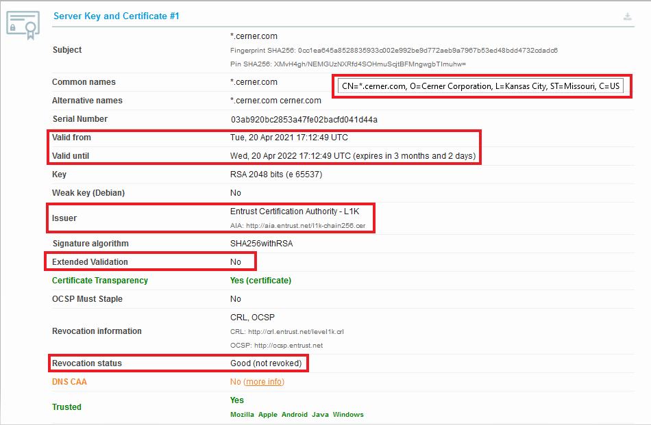

Application Registration Prerequisites / Developer Guide
Audience
This technical specification is targeted at software developers building applications on top of Cerner’s Ignite application platform as part of the code program.
Overview & Purpose
This technical specification outlines a series of security best practices that, if followed, enable Cerner to provide more detailed information about your application to end users. The goal of these best practices is to encourage the use of existing internet security features and standards. In particular, we want users to:
- be assured that their data is being securely transmitted using modern transport layer security and encryption protocols
- understand what legal entity they’re sharing their data with
These best practices should be considered as strongly-recommended prerequisites that software developers address during the application registration process, prior to making their applications available for general use. Failure to comply with these prerequisites will result in Cerner describing your application as an “Unknown Application” to users during the OAuth authorization workflow.
Glossary of Terms
- eTLD - Effective Top Level Domain is the base domain. eTLD values are defined in the Public Suffix List. Examples include: .com, .edu, .org, and .co.uk.
- eTLD+1 - “Effective top level domain plus 1” describes a domain name that is one level deeper than the effective top level domain (eTLD). Examples include examplehealth.com, cerner.com and cerner.co.uk.
- OV - Organization Validated - a certificate issuance process that involves the certificate authority validating the organization (business entity) requesting the certificate.
- EV - Extended Validation - a certificate issuance process that involves the certificate authority performing extended validation of the organization (business entity) requesting the certificate.
- DV - Domain Validated - a certificate issuance process that involves the certificate authority validating the requester owns the domain. No validation of the business entity is performed.
- TLS - Transport Layer Security
- DNS TXT record - a “text” record in the Domain Name System (DNS). TXT records usually take form of name=value.
Technical Requirements
The following technical requirements are stated using RFC 2119 terminology. These requirements focus on the security best practices that Cerner expects application developers to adhere to in order for Cerner to provide the best description of your application to end users:
- Web applications MUST support the HTTPS 1.1 protocol.
- Application SHOULD support TLS. (Please refer to the code TLS Guidance document for further detailed practices related to TLS.)
- Application SHOULD use (only) port 443 for TLS.
- Application SHOULD support and prefer TLS 1.2 or higher.
- Application SHOULD have a valid, non-expired TLS certificate issued from a trusted authority.
- Application SHOULD use an OV or EV certificate, if possible, instead of a DV certificate.
- Application’s web site SHOULD host a DNS TXT record containing the Cerner-issued client identifier for the application (also referred to as a “system account ID” in CernerCentral or a “client identifier” in the OAuth 2 specification ). This TXT record should be added to the eTLD+1 for the domain hosting the application.
- Application’s name SHOULD ideally align with the name of the website hosting it and/or the legal entity operating it.
- Mobile/Native applications SHOULD (as suggested by RFC-8252 ) use claimed “https” Scheme URI redirection instead of private-use URI scheme redirection.
Adhering to all the above requirements ensures that Cerner can convey the most meaningful, descriptive information about your application to end users. Failure to follow recommended (SHOULD) requirements will result in users seeing less information about your application. When Cerner is unable to determine information about your application because one or more of the requirements above have not been implemented, Cerner will display “unknown” when describing your application to users. See the “Information Displayed to Users” section below for more details.
If you’d like to better understand why Cerner has these technical requirements, please see the “Information Displayed to Users” and “FAQ” sections below.
NOTE: Please consider the code Validation Program if you would like Cerner to perform a deeper security assessment of your application.
Setting Up Your Domain’s DNS TXT Record
To follow the security best practices, you will need to add a DNS TXT record to your application’s website containing the Cerner-issued client identifier for the application (also referred to as a “system account ID” in CernerCentral or a “client identifier” in the OAuth 2 specification). This TXT record should be added to the eTLD+1 for the domain hosting the application.
Please consult your ISP’s documentation for the steps to set up a DNS TXT record at your application’s eTLD+1 domain.
The DNS TXT record of your application must match the following key-value format, here “value” is the Cerner-issued client identifier for your application.:
Format:
cerner-client-id=value
Example:
cerner-client-id=bxdcd0ff-5der-4c15-b2tf-r28b105aa845
In the case that multiple apps are registered for the same eTLD+1 domain, multiple TXT records can be added each with the cerner-client-id for a specific application. For example:
cerner-client-id=value1
cerner-client-id=value2
...
cerner-client-id=valueN
Steps to Verify Your Application’s Compliance
The steps outlined below show you how you can check to see if your application complies with the technical requirements listed above.
Determine your eTLD+1
The eTLD+1 is the effective top level domain (TLD) and the part of the domain just before it. For example, given a URL of https://my-project.github.io, the TLD is io and the eTLD+1 is github.io, which is considered a “site”. This domain will be shown to end-users.
To determine eTLD+1 please check public domains that are defined in the Public Suffix List.
Querying DNS for your TXT record
TXT records are a type of Domain Name System (DNS) record that contains text information for sources outside of your domain. You add these records to your domain settings for further domain ownership verification by Cerner.
To follow the security best practices the DNS TXT record of your application must match the following key-value format:
cerner-client-id=value where value = Cerner-issued client identifier for your application in the case when multiple apps are registered for the same domain, cerner-client-ids will be stored in the same TXT record in the format:
cerner-client-id=value1
cerner-client-id=value2
...
cerner-client-id=valueN
You can use the following commands and tools to check the DNS TXT records:
- Using the Windows CLI:
“nslookup” → e.g.: “nslookup -type=TXT examplehealth.com”
- Using the Mac/Linux terminal:
“dig” → e.g.: dig examplehealth.com TXT
- Using the following online resources:
Inspect your TLS Certificate
TLS certificates are used to protect both the end users’ information while it’s in transfer, and to authenticate the website’s organization identity to ensure users are interacting with legitimate website owners.
To follow the security best practices you should utilize TLS implementations that support current IETF best practices for TLS (please refer to this documentation for more details). Cerner RECOMMENDS you utilize public testing tools, such as Qualsys SSL Labs, to verify proper functioning of your https implementation.
Please follow one of below approaches to check TLS Certificates for your application:
-
Using OpenSSL Mac/Linux: https://www.feistyduck.com/library/openssl-cookbook/online/ch-testing-with-openssl.html
- Using the following online resources:
- Using a web browser to check the certificate, use Firefox for best results.
- Load the URL into the browser
- Click on the Lock symbol in the browser’s address bar
- Click “Connection Secure”
- Click “More Information”
- Click “View Certificate” (For other browsers, use the Certificate Policy and look up the OID for the policy.)
What you should pay attention to:
- Supported TLS Certificates types (this is usually in a section called “Certificate Policies” as is the case if you view the cert in Firefox) :
- Domain Validated (DV),
- Organization Validated (OV),
- Extended Validation (EV). ##### Example
Using Firefox to view your TLS certificate may result in a similar Organization Validated certificate as in the example below: Organization Validated Certificate Type
{kind=link}
- Supported TLS protocols:
- TLS 1.2
- TLS 1.3
- The Certificate Revoked/not Revoked status
- The Certificate “Valid from” date
- The Certificate expiration date
- The Certificate issued by one of the public Certificate Authorities.
Example
Using online resource https://www.ssllabs.com TLS certificate result may be as on example below: 
Information Displayed to Users
Application / Business Details
The following table explains how following the security practices above result in users getting more information about your application and the business/organization offering it. The table shows what information Cerner displays to end users, where it’s sourced from, and under what conditions it’s used.
| Information | Example | Source | Conditions |
|---|---|---|---|
| Application Name | Example Health App | Cerner CODE Portal - Application Registration | Application name is only displayed to users if a legal entity can be associated with the application’s website via the use of a valid, trusted EV or OV certificate. |
| Organization Name | Example Health Corporation | EV or OV TLS Certificate | Organization name is only displayed to users if a legal entity can be associated with the application’s website via the use of a valid, trusted EV or OV certificate. |
| Organization Location | US, MO, Kansas City | EV or OV TLS Certificate | Organization location is only displayed to users if a legal entity can be associated with the application’s website via the use of a valid, trusted EV or OV certificate. |
| Website Domain (eTLD+1) | examplehealth.com | Cerner CODE Portal - Application Registration | The eTLD+1 portion of the host domain of the redirect URI will always be displayed to the end user. |
Labels
The following table explains labeling Cerner applies to applications in certain conditions.
| Label | Conditions |
|---|---|
| “Validated” | This label is displayed when an application has been formally Validated through the code Program. |
| “Unknown App” | This label indicates that an application doesn’t employ enough of the security best practices listed in the Technical Requirements section above for Cerner to describe the application. |
FAQ
Are these security requirements required of all Cerner Ignite applications?
The security requirements outlined in this document are currently only required for all Ignite applications targeting the patient persona. Though, Cerner encourages the use of these best practices for all end user facing applications.
Does my development environment need to comply with these security requirements?
No. You can have development environment(s) that leverage private domains (such as “localhost”), unsecured connections (non-HTTPS), and/or nonstandard ports (non-443).
However, be aware that Cerner will not be able automatically assess such environments’ compliance with security best practices. It is therefore recommended that you also have one or more development environments that do comply with this page’s recommendations, so that you can receive an accurate preview of your patients’ user experience in production.
Why are OV/EV certificates preferred by Cerner?
Organization-Validated (OV) and/or Extended-Validation (EV) certificates ensure that the certificate is being issued to an official business entity (with a name and address). This helps provide transparency to users (patients) about who they are sharing their data with. Cerner does not perform validation of the incorporation of your business. By utilizing an OV or EV certificate, Cerner trusts that the certificate authority has performed such validation and will correspondingly display your organization’s name in association with the application.
Is either an OV or EV certificate acceptable?
Yes, at the time of writing Cerner does not distinguish OV and EV certificates, so either is acceptable. However, some web browsers might give preferential treatment to EV certificates.
Are self-signed certificates acceptable?
No. Cerner does not support the use of self-signed certificates.
What Certificate Authorities (CAs) does Cerner trust?
Refer to code TLS Guidance for a summary of the CAs that Cerner trusts.
How/when does Cerner use eTLD+1 values?
In some situations where Cerner cannot determine the business entity providing an application, Cerner falls back to using the domain name of the application’s primary redirect URI to describe the application. For brevity/consistency, the eTLD+1 value will be used in these situations.
Why does Cerner only display the eTLD+1 portion of the domain name?
This is done to help avoid confusing users (patients). Google has a good write-up explaining the security benefits of this practice.
How do I get a Cerner client identifier for my application?
Cerner assigns your application a unique client identifier for your application as part of the registration process at the code console. This Cerner client identifier is also referred to as a System Account ID in some Cerner Central tooling https://cernercentral.com/system-accounts/.
Why is a DNS TXT record recommended?
The DNS TXT record helps prove that the website intends to host your application. Cerner does not automatically assume that URLs provided by a developer are associated with the website operator. By publishing a DNS TXT record, Cerner can verify that the party that controls the website address intends to associate itself with the your registered application.
Where should the DNS TXT record be placed?
The DNS TXT record should be located on the DNS record for the eTLD+1 domain name of your application’s primary redirect URI.
What happens if I don’t provide the DNS TXT record?
Cerner is unable to determine if the website intends to host your application. Therefore, Cerner will label the application as “Unknown App” and no information about your application except the domain name (ETLD+1) will be displayed to the user. It will not prevent the user from using your application if he/she is comfortable with it.
Why does Cerner recommend that an application’s name align with the name of the website hosting it and/or the legal entity operating it?
As mentioned in the overview, the goal of the practices outlined in this document is to enable users (patients) to have a better understanding of who/what they’re considering sharing the protected health information (PHI) with. Having a series of seemingly unrelated names (for application name, organization name, and website name) makes it more difficult to achieve this goal.
If I make changes to my application’s TLS certificate and/or DNS TXT record, how long before the Cerner workflow will recognize/display these changes?
It may take up to 12 hours before the Cerner workflow will recognize TLS certificate/or DNS TXT record changes.
What should I do if the organization information being displayed for my application seems incorrect?
Use the steps outlined above to check the certificate being returned from the URL of your application’s redirect URI. It’s possible that your organization may be employing a content delivery network (CDN) that’s serving up its own certificate for your website. If you determine this to be the case, work with your CDN provider to ensure that it’s serving the proper certificate for your URL.